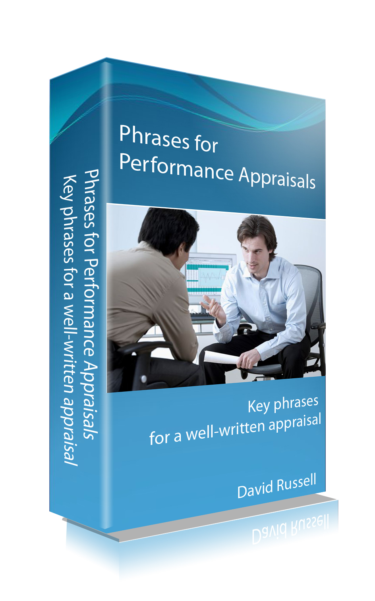
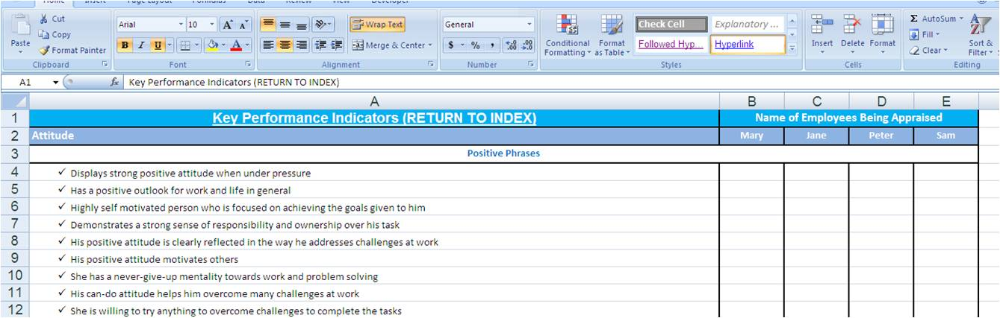
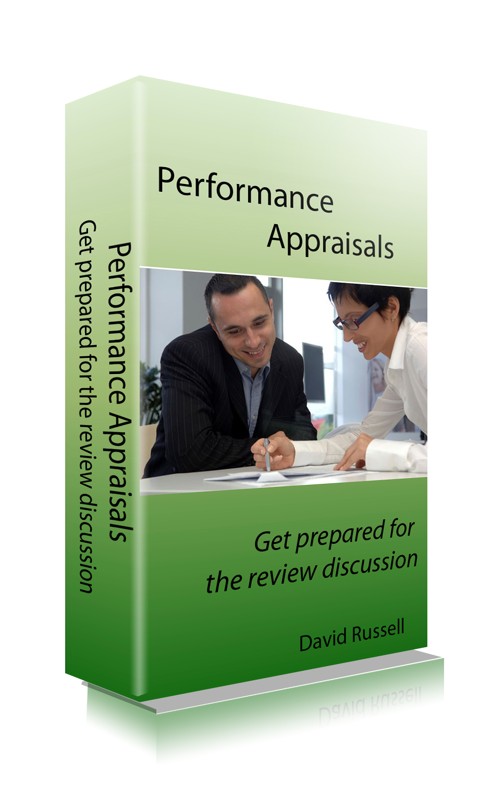

Attention: If you're writing your performance appraisal and struggling with words to highlight your achievements, then I suggest you..........

"Stop Struggling And Use The Collection of Ready-To-Use Phrases For Performance Appraisals!"
From the desk of David Russell,
Date:
Dear Friend,
It's time of the year when you need to submit your performance review report and get ready for the interview with your boss.
You've worked hard through the year and you would like to capture as much of your achievements in the report as possible. While highlighting your strengths, you're also trying to downplay some of the areas where you have not been too successful in meeting expectations.
I can imagine how you're feeling now. You've been writing for awhile and is at the point where you are now struggling with the right words to describe your successes.
You're concern with your boss not getting full visibility over your great work during the review period. You're worried about your boss' bosses reading your performance appraisal report and not getting a good impression of you.
The good news is you're not the only one facing these worries at appraisal time. Even your bosses have the same challenges. They too struggle with their performance appraisals.
But, you know what, they are not better than you in writing good comments in appraisals. Like most other people, they probably get help from appraisal comments or phrases guide books.
Why Are Performance Appraisal Comments Or Phrases Guides So Useful & Popular?
I'll tell you why so many people are using them and why you should do the same...
First of all, you do not have to think so hard for the right words to describe your achievements or camouflage your weaknesses. There are hundreds of ready-to-use phrases which many people have use effectively in their appraisals. These comments have been crafted and refined over the years, and you do not have to reinvent the wheel! Use and adapt them to your situations and you will make your appraisals look very impressive.
Secondly, the choices of words and phrases are very concise and impactful! Such phrases will help you to clearly and succinctly articulate your achievements and impress your boss with your writing.
Thirdly, you do not have to spend much time writing the appraisal. You will have more time to prepare for your interview. While your appraisal form captures in writing your achievements, it cannot replace the verbal communications during the interview with your boss. You must dedicate time to review your key achievements mentally and be able to articulate them well during the discussion.
You do not have to struggle anymore! Just do what others are doing to get the better appraisal results!
Introducing...
"Phrases For Performance Appraisals Guidebook"
Performance appraisals ready-to-use phrases can help you write professional and impressive appraisals!

In this guidebook, you'll get
- A collection of hundreds of ready-to-use impactful appraisal comments and phrases
- Phrases to highlight your key strengths and achievements
- Phrases to downplay your weaknesses to soften the impact on your overall performance
- A comprehensive list of phrases covering most of the categories of KPIs used by many companies
- Guidebook provided in Microsoft Word softcopy for your easy copy, paste and modify in your appraisal form
- Guidebook provided in Microsoft Excel spreadsheet so that you can use it also for your employees' appraisals and easy moderation!
- Many MORE!
Would you rather continue to struggle or finish your appraisal writing quickly with an impressive set of phrases used by many professionals?
It is critical to ensure that your performance appraisals capture the best of your work during the period under review. Your performance appraisal form becomes a permanent record that will have an impact on your career not only in the same organization, but may also be used as reference if requested by a future employer.
This guidebook contains detailed phrases and comments used by many professionals to write excellent looking appraisals!
Using the right words or phrases will help you to convey the amount of effort that you put in to achieve a specific goal or business metric. More importantly it also emphasizes the level of expertise that you possess relevant for your job.
That is why is it very important for you to realize the value of what you're getting.
Remember that others are able to write better appraisals and get the promotion probably because they use phrases from guidebooks. Do you really want to lose out to them?
So make sure you take action and get a copy of this book right away!
"Phrases for Performance Appraisals" Guidebook
"Phrases for Performance Appraisals" Guidebook
Usual Price: US$47
Special Offer:
US$18.95
PLUS... get the following 2 bonuses if you order now!
Bonus Offer 1
Get the Excel version of "Phrases for Performance Appraisals" FREE!

This version is a great tool for evaluating several employees at the same time and moderate their performances quickly and easily.

Bonus Offer 2
Get the Accompanying eBook on "Performance Appraisals - Get Prepared for the Review Discussion" FREE!
Don't Hesitate!
Order Now For US$18.95 ONLY!
(Usual Price: US$47)
Download Immediately!
"It was that time of the year again, and I was at my wit's end when I had to write my own performance appraisal feedback. I can't seem to find the right phrases to describe my achievements. Thank goodness for the Phrases for Performance Appraisals resource guide. Using the sample phrases provided, I could easily tweak the phrases to suit my work and what i wanted to highlight to my boss."
"The performance appraisal phrases are nicely categorized and easy to pick and choose to suit my personal KPIs (Key Performance Indicators)."
"With 12 people in my team, I'm always mindful of comparing apples to apples.The Excel spreadsheet version gives me a simple tool to rate the various team members in a consistent manner. The scoring system also helped me to moderate their performances easily. What a fantastic time saver! Thank you so much for the wonderful spreadsheet."
To Your Success,
David Russell
Director, PFPA
P.S. Remember this is a very special offer for the next 23 orders only! So don't hesitate and grab a copy now!
P.P.S. You do not want to lose out to others who have better performance appraisals and get the promotion just because they use phrases from guidebooks to enhance their results!
P.P.P.S. Remember, with the guidebook, you can stop your pain now and easily write a very impressive and impactful appraisal. Order and download immediately!